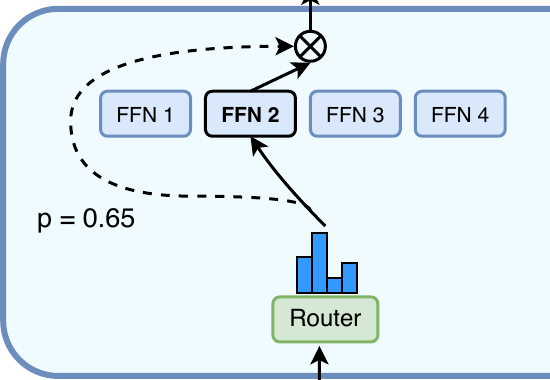

Top-k routing and even load
On this page
A dense transformer block sends every token through the same feed-forward network (FFN). A mixture of experts (MoE) block keeps attention and the residual, and swaps that FFN for N FFNs, called experts, plus a small router that picks k of them for each token. The tokens are the pieces a tokenizer cuts text into, as in Tokenizers.
Stored weights grow with N, the number of experts. The work per token grows with k, the number of experts each token uses (Figure 2). The two illustrative toys use the sizes of section 6’s code: token width d = 512 and hidden width 2,048, so one FFN holds 2.1M weights and costs 4.19M floating-point operations (FLOPs) per token. In the Switch Transformer paper (Fedus et al., 2021), Switch-Base with 64 experts matched T5-Base, a dense model with the same compute per token, in one-seventh of the training time. Mixtral (Jiang et al., 2024) is called 8x7B but stores 47B parameters, not 56B, because only the FFNs are copied; attention and the embeddings are shared. DeepSeek-V3 (DeepSeek-AI, 2024) stores 671B and uses 37B per token.
Training optimizes the usual next-token loss of The Transformer Block, section 7, plus the two small terms of sections 3 and 5. The router runs at every MoE layer, for every token, on every forward pass, in training and at inference, where that means every generated token (the generate loop). Nothing is carried between steps except the learned weights. Per token, the router costs 2·d·N FLOPs: 8,192 for the illustrative d = 512 and N = 8. The k expert FFNs cost the rest.
The running example is the prompt “the cat has 3”, four tokens an LLM has read while predicting the next one; the digit is its own token (Tokenizers, section 5.1). Four experts keep the grids readable; Mixtral has 8 per layer. The scores are illustrative values, set up as the start of collapse: E1 already wins the article, the noun and the verb, and only the digit pulls hard to its own expert, as counting tokens did for encoder experts in ST-MoE (Zoph et al., 2022).
Trained routers follow token type and syntax more than topic. Mixtral’s router shows no clear expert per topic, while tokens like “self” in Python and indentation keep returning to the same experts. ST-MoE’s encoder experts specialize in token groups, and its decoder experts far less.
In the “cat” row, the scores 1.2, 1.0, −0.2 and 0.0 become shares 0.42, 0.35, 0.10 and 0.13. The router gives each expert a score for this token with one matrix multiply; a higher score means a bigger share.
The router scores every expert, then softmax turns the scores into shares.
Keep the k largest shares, run only those experts, and blend their outputs by weights called gates. The sparsely gated layer with noisy top-k comes from Shazeer et al. (2017), and the renormalized top-2 from GShard (Lepikhin et al., 2020).
The Switch Transformer paper draws the same step for one token.

With the illustrative scores and k = 1, “the”, “cat” and “has” go to E1 and “3” goes to E4, with gates 0.69, 0.42, 0.54 and 0.74. With k = 2, “cat” keeps E1 and E2 with gates 0.55 and 0.45, and E3 and E4 do no work for it. Pick the k experts the router likes best for this token, run only those, and add their outputs weighted by their gates.
Keep the top k shares as gates and add the chosen experts’ outputs.
Figure 6. Illustrative scores of Figure 3; arrow width is the gate.
An expert that wins a few more tokens gets trained more and wins even more. The noisy top-k gating paper saw it: “This imbalance is self-reinforcing, as the favored experts are trained more rapidly and thus are selected even more by the gating network.” In the running example E1 already takes 3 of 4 tokens.
Count where tokens went, average where the router wanted them to go, and charge a penalty that is smallest when both are even. In this illustrative example the loss is 1.56, against 1.0 for an even split and at most 4.0, which is N, when every token and all the share sit on E1.
The balance loss multiplies where tokens went by where the router wanted them, per expert.
Repeated every training step, the push spreads the load; its weight α decides how hard it pulls against the task loss, and α = 0 turns it off. Switch picked α = 10−2 as “sufficiently large to ensure load balancing while small enough to not to overwhelm the primary cross-entropy objective”. Token types come in uneven amounts, and each type has an expert that handles it best, its own expert, so perfectly even loads must move some tokens off their own expert. Mixture of Experts Designs, section 1, removes this dilemma with a bias. Take a toy top-1 layer with 8 experts, 8 token types and 512 tokens per step: type i fits Ei best, and the types shrink from 28% of tokens for type 1 to 6% for types 7 and 8; its α is in toy units, not Switch’s.
Figure 8. Raising α pulls bars to 1; past α = 1 it shrinks 2.
Accelerators run compiled code that needs tensor sizes fixed in advance (Switch, section 2.2), so each expert gets C slots per batch, its capacity. A token past C skips this layer’s experts and rides the residual unchanged.
With T = 4 tokens, N = 4 experts and k = 1, a fair share is one token per expert, and E1 receives “the”, “cat” and “has” in that order. Give each expert room for its fair share of the batch, times a safety margin.
Capacity is the fair share of the batch times a margin.
Even at α = 1 in Figure 8 the busiest expert holds 28% of tokens, 2.25 times its fair share, so CF 1.0 would drop more than half of them. A bigger CF drops fewer tokens and pads more empty slots. Switch typically drops under 1% of tokens and found CF 1.0 and 1.25 best; ST-MoE trains at 1.25 and evaluates at 2.0.
Softmax ignores a shift of all scores (Softmax, Temperature and Decoding, section 1), so scores can drift large without changing any choice. Large scores round badly in bfloat16, the 16-bit format big models train in.
Penalize big router scores, because softmax does not need them and big numbers round badly.
The z-loss charges the size of each token’s scores, and joins the total loss.
Router, top-k, dispatch and combine in one module.
import torch
import torch.nn as nn
import torch.nn.functional as F
class MoELayer(nn.Module):
def __init__(self, d_model, d_ff, n_experts, k=1):
super().__init__()
self.k = k
self.router = nn.Linear(d_model, n_experts, bias=False)
self.experts = nn.ModuleList(
nn.Sequential(nn.Linear(d_model, d_ff), nn.ReLU(),
nn.Linear(d_ff, d_model))
for _ in range(n_experts))
def forward(self, x): # x: (tokens, d_model)
xf = x.float() # router in float32
z = F.linear(xf, self.router.weight.float())
p = z.softmax(dim=-1)
g, idx = p.topk(self.k, dim=-1)
if self.k > 1:
g = g / g.sum(dim=-1, keepdim=True)
y = torch.zeros_like(x)
for e, expert in enumerate(self.experts):
tok, slot = (idx == e).nonzero(as_tuple=True)
if tok.numel() == 0:
continue
out = expert(x[tok]) * g[tok, slot, None]
y = y.index_add(0, tok, out.to(x.dtype))
return y, z, p, idxThe two extra losses and one optimizer step with them.
def load_balance_loss(p, idx, n):
f = F.one_hot(idx[:, 0], n).float().mean(0) # top-1 counts
P = p.mean(0)
return n * (f * P).sum()
def router_z_loss(z):
return torch.logsumexp(z, dim=-1).pow(2).mean()
ALPHA, BETA = 1e-2, 1e-3
moe = MoELayer(512, 2048, 8, k=1)
opt = torch.optim.AdamW(moe.parameters())
x, target = torch.randn(64, 512), torch.randn(64, 512)
y, z, p, idx = moe(x)
# stand-in for the model's next-token loss
task = F.mse_loss(y, target)
lb = load_balance_loss(p, idx, 8)
zl = router_z_loss(z)
loss = task + ALPHA * lb + BETA * zl
opt.zero_grad()
loss.backward()
opt.step()A mask of the tokens each expert keeps, in arrival order, for k = 1.
def capacity_mask(top1, n, cf):
T = top1.numel()
C = int(cf * T / n) # slots per expert
onehot = F.one_hot(top1, n)
pos = onehot.cumsum(0) * onehot # arrival order
keep = pos.sum(-1) <= C
return keepThe layer replaces the FFN call inside each MoE block, and the two losses join the task loss before backward. The router runs in float32 even when the rest runs in bfloat16 (Switch, section 2.4).
| knob | enters | raise it | lower it | default |
|---|---|---|---|---|
| k | gate card | more compute and communication, more expert combinations | less compute | Switch 1; GShard and Mixtral 2 |
| N | every card | more stored weights at the same compute, fewer tokens per expert | N = 1 is the dense FFN | Mixtral 8 |
| α | z-loss card, line 3 | spreads load faster but fights the task loss | collapse can start | Switch 10−2, swept 10−1 to 10−5; Hugging Face’s 0.001 is a default, not a published value |
| CF | capacity card | fewer drops, more padding | below 1 always drops | Switch 1.0 to 1.25; ST-MoE 1.25 train, 2.0 eval |
| β | z-loss card, line 3 | scores pushed toward 0 | 0 removes the term | ST-MoE 0.001 |
The Hugging Face Transformers version is modeling_mixtral.py, with MixtralSparseMoeBlock, MixtralTopKRouter and load_balancing_loss_func. A collapsing router does not show in the task loss, only in the load shares; what goes wrong is in Mixture of Experts Designs, section 9.
Bias balancing, the real designs from Switch to DeepSeek-V3, experts across GPUs and fine-tuning continue in Mixture of Experts Designs.